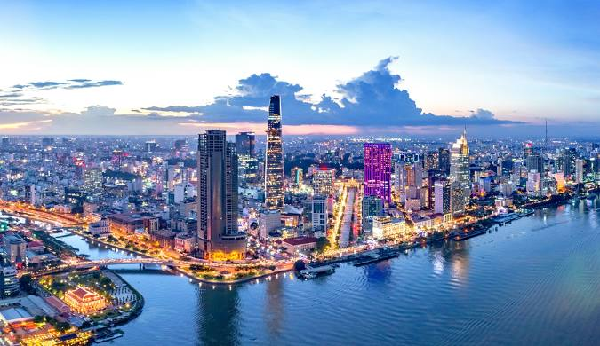
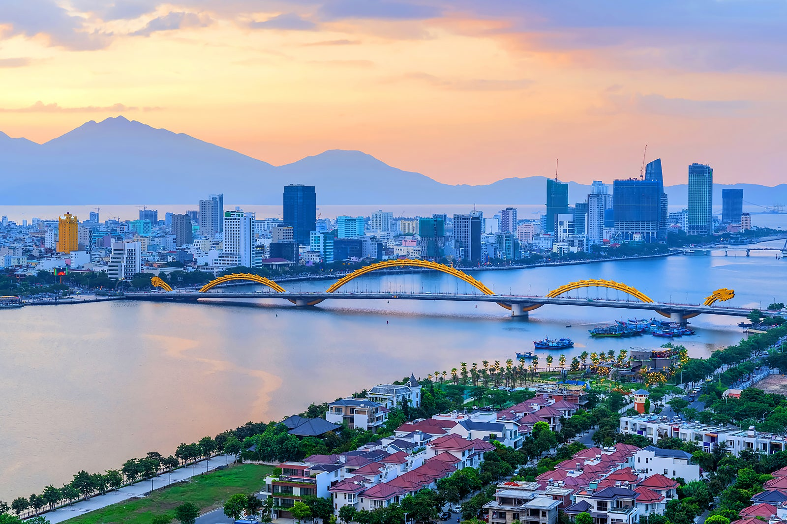
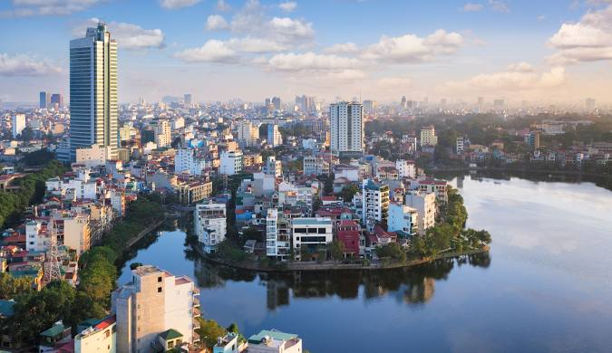

Sai Gon

Saigon, officially known as Ho Chi Minh City (HCMC), is Vietnam's largest and most bustling metropolis. Located in the southern part of the country, it serves as a vibrant hub of commerce, culture, and history. Once the capital of French Cochinchina, Saigon boasts a rich colonial heritage evident in landmarks like the Notre-Dame Cathedral Basilica, the Saigon Central Post Office, and elegant boulevards.
The city blends tradition and modernity, featuring a dynamic skyline with towering skyscrapers alongside bustling street markets and ancient temples. Ben Thanh Market and the War Remnants Museum are must-visit sites, while the Cu Chi Tunnels nearby offer insights into Vietnam's wartime history. Known for its lively street food scene, Saigon tempts visitors with iconic dishes like pho and banh mi. With its energy, history, and charm, Saigon captures the essence of Vietnam's growth and resilience.
Da Nang

Da Nang, a coastal city in central Vietnam, is renowned for its stunning beaches, modern amenities, and proximity to natural and cultural landmarks. Situated between Hanoi and Ho Chi Minh City, it serves as a gateway to the UNESCO World Heritage Sites of Hoi An Ancient Town and My Son Sanctuary.
The city is famous for its white-sand beaches like My Khe Beach and Non Nuoc Beach, as well as the dramatic Marble Mountains, which feature caves, temples, and panoramic views. A modern highlight is the Golden Bridge, a pedestrian bridge held by giant stone hands, located in the nearby Ba Na Hills.
Da Nang’s vibrant atmosphere is complemented by its seafood-rich cuisine and its signature dishes like mi quang. With a mix of natural beauty, historical sites, and urban charm, Da Nang is a top destination for travelers seeking relaxation and exploration.
Ha Noi

Hanoi, Vietnam's capital and cultural heart, is a city where ancient traditions meet modern energy. Situated in the northern part of the country, Hanoi is famous for its historic architecture, centuries-old temples, and scenic lakes. Its Old Quarter, with narrow streets and bustling markets, offers a glimpse into the city's vibrant everyday life.
Key attractions include the Ho Chi Minh Mausoleum, the Temple of Literature, and Hoan Kiem Lake, with the iconic Turtle Tower at its center. Hanoi’s rich culinary scene is a highlight, featuring iconic dishes like pho, bun cha, and egg coffee.
With its tree-lined boulevards, French colonial influences, and cultural depth, Hanoi is a city of timeless charm, offering visitors a captivating blend of history and modernity.